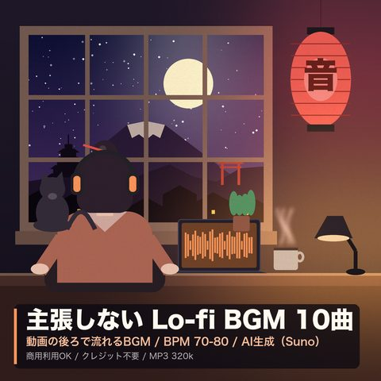
【AI生成BGM】主張しない Lo-fi BGM 10曲パック
BOOTHで購入 ↗0:00 / 2:46
01静かな時間 I試聴18s / 本編2:53
02静かな時間 II試聴18s / 本編2:28
03やわらかな午後 I試聴18s / 本編2:53
04やわらかな午後 II試聴18s / 本編3:02
05薄明かり I試聴18s / 本編3:12
06薄明かり II試聴18s / 本編3:02
07深夜の作業 I試聴18s / 本編2:39
08深夜の作業 II試聴18s / 本編2:43
09ゆっくりな朝 I試聴18s / 本編3:22
10ゆっくりな朝 II（短め）試聴18s / 本編1:18
上のプレイヤーは全曲ダイジェスト。各曲18秒の抜粋です。
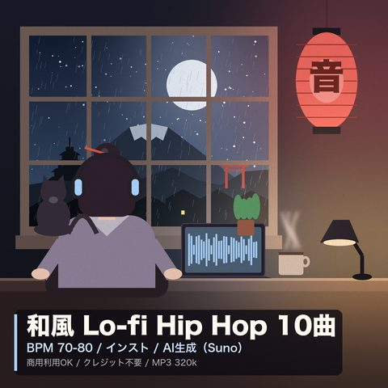
【AI生成BGM】和風 Lo-fi Hip Hop 10曲パック
BOOTHで購入 ↗0:00 / 2:46
01静かな朝 I試聴18s / 本編3:12
02静かな朝 II試聴18s / 本編3:17
03京の夕暮れ I試聴18s / 本編3:13
04京の夕暮れ II試聴18s / 本編2:58
05雨の路地 I試聴18s / 本編2:57
06雨の路地 II試聴18s / 本編3:12
07夏の夕べ I試聴18s / 本編2:54
08夏の夕べ II（短め）試聴18s / 本編1:18
09神社の朝 I試聴18s / 本編3:22
10神社の朝 II試聴18s / 本編3:28
上のプレイヤーは全曲ダイジェスト。各曲18秒の抜粋です。
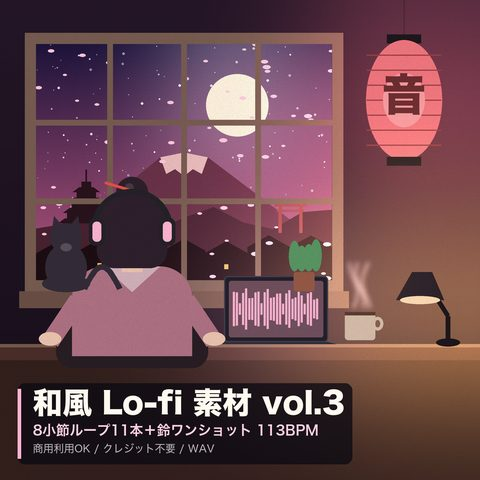
和風 Lo-fi サンプルパック【113BPM】8小節ループ11本＋鈴
BOOTHで購入 ↗0:00 / 1:27
01bass ループ（8小節 / 113.33BPM）試聴9s / 本編0:17
02hats ループ（8小節 / 113.33BPM）試聴9s / 本編0:17
03kick ループ（8小節 / 113.33BPM）試聴9s / 本編0:17
04melo ループ（8小節 / 113.33BPM）試聴9s / 本編0:17
05melo2 ループ（8小節 / 113.33BPM）試聴9s / 本編0:17
06sn ループ（8小節 / 113.33BPM）試聴9s / 本編0:17
07suzu1 ループ（8小節 / 113.33BPM）試聴9s / 本編0:17
08suzu2 ループ（8小節 / 113.33BPM）試聴9s / 本編0:17
09vinyl ループ（8小節 / 113.33BPM）試聴9s / 本編0:17
10鈴ワンショット suzu1-1試聴2s / 本編0:02
11鈴ワンショット suzu1-2試聴2s / 本編0:02
12鈴ワンショット suzu2-1試聴2s / 本編0:02
13鈴ワンショット suzu2-2試聴2s / 本編0:02
14cym ループ（8小節 / 113.33BPM）試聴9s / 本編0:17
15intro ループ（8小節 / 113.33BPM）試聴9s / 本編0:17
上のプレイヤーは全曲ダイジェスト。各曲18秒の抜粋です。
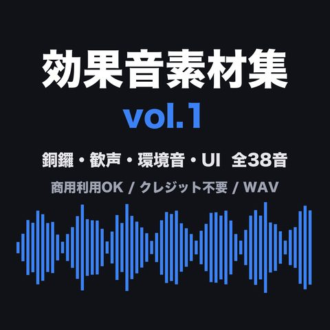
効果音素材集 vol.1【38音】銅鑼・歓声・環境音・UI
BOOTHで購入 ↗0:00 / 1:04
タップで該当の音から再生（各1.6秒・モノラル96kbpsの試聴版）。
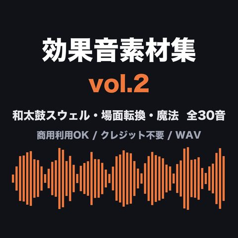
効果音素材集 vol.2【30音】和太鼓スウェル・場面転換・魔法
BOOTHで購入 ↗0:00 / 0:54
タップで該当の音から再生（各1.6秒・モノラル96kbpsの試聴版）。
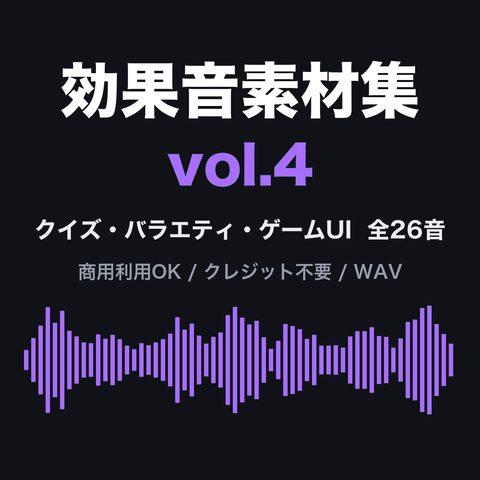
効果音素材集 vol.4【26音】クイズ正解・不正解・テロップ・ゲームUI
BOOTHで購入 ↗0:00 / 0:38
タップで該当の音から再生（各1.6秒・モノラル96kbpsの試聴版）。
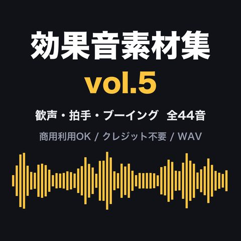
効果音素材集 vol.5【44音】歓声・拍手・ブーイング
BOOTHで購入 ↗0:00 / 1:21
タップで該当の音から再生（各1.6秒・モノラル96kbpsの試聴版）。
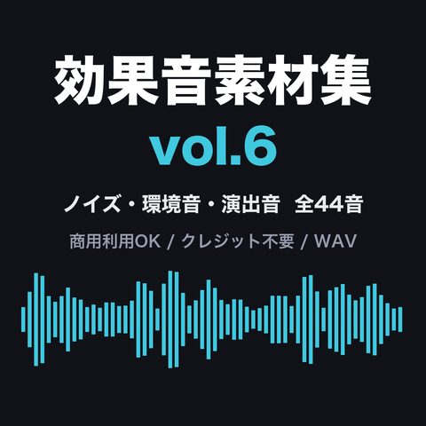
効果音素材集 vol.6【44音】レコードノイズ・環境音・ドローン・演出音
BOOTHで購入 ↗0:00 / 1:20
タップで該当の音から再生（各1.6秒・モノラル96kbpsの試聴版）。
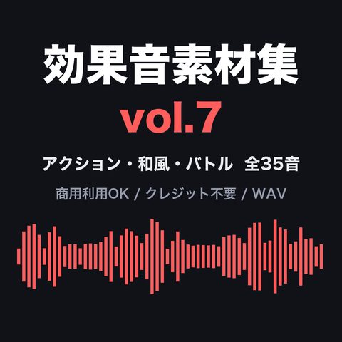
効果音素材集 vol.7【35音】銃声・和太鼓・銅鑼・魔法・バトル
BOOTHで購入 ↗0:00 / 0:59
タップで該当の音から再生（各1.6秒・モノラル96kbpsの試聴版）。
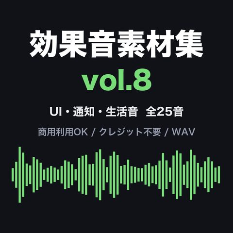
効果音素材集 vol.8【25音】UI・通知・タイピング・生活音
BOOTHで購入 ↗0:00 / 0:41
タップで該当の音から再生（各1.6秒・モノラル96kbpsの試聴版）。
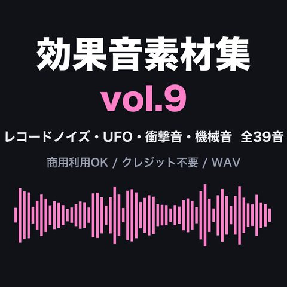
効果音素材集 vol.9【39音】レコードノイズ・UFO・衝撃音・機械音
BOOTHで購入 ↗0:00 / 1:11
タップで該当の音から再生（各1.6秒・モノラル96kbpsの試聴版）。
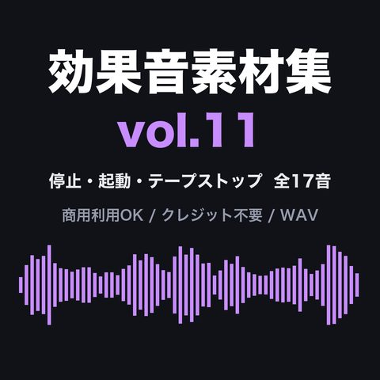
効果音素材集 vol.11【17音】停止・起動・テープストップ
BOOTHで購入 ↗0:00 / 0:31
タップで該当の音から再生（各1.6秒・モノラル96kbpsの試聴版）。
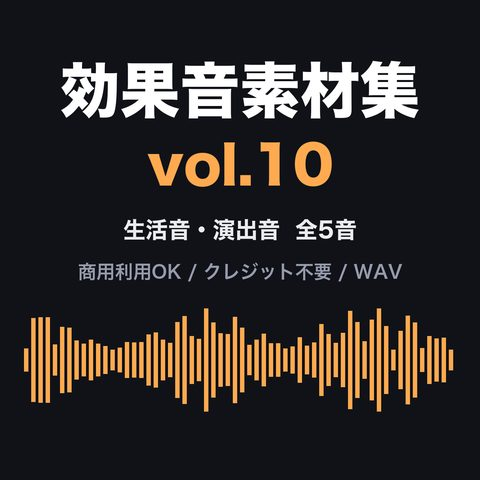
効果音素材集 vol.10【5音】心臓の鼓動・時計の秒針・電話・劇場の拍手・ラジオ歓声
BOOTHで購入 ↗0:00 / 0:09
タップで該当の音から再生（各1.6秒・モノラル96kbpsの試聴版）。